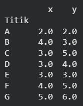
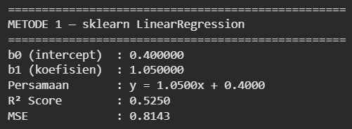
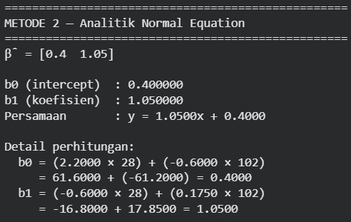
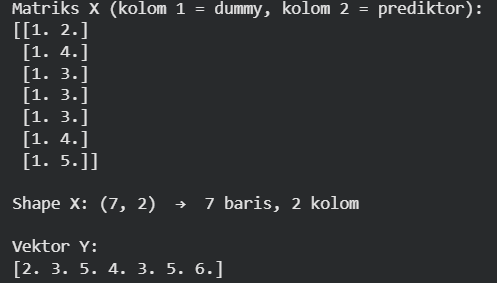
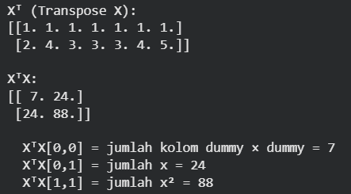
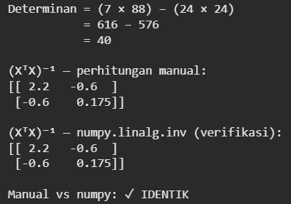
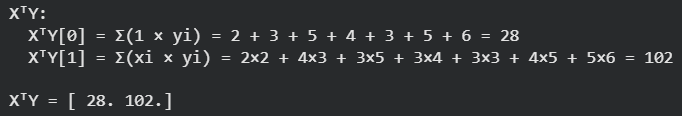
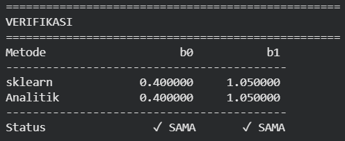
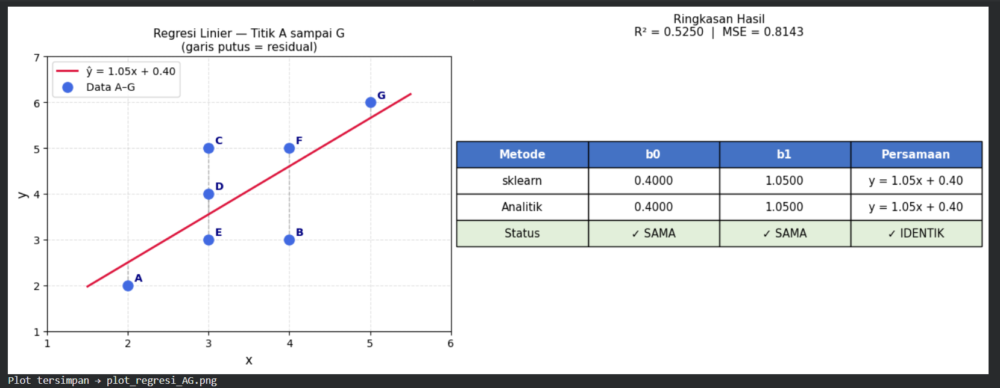

Analisis Data Menggunakan Regresi Linier#
1. Pendahuluan#
Laporan ini menerapkan metode Regresi Linier pada dataset titik koordinat A sampai G yang divisualisasikan melalui GeoGebra. Dataset ini digunakan sebagai contoh perhitungan manual koefisien regresi menggunakan operasi matriks, sekaligus diverifikasi menggunakan library scikit-learn di Python.
Tujuan analisis:
Menjelaskan konsep dasar Regresi Linier dan cara mencari koefisien secara analitik menggunakan rumus matriks \(\hat{\beta} = (X^\top X)^{-1} X^\top Y\).
Menyediakan walkthrough perhitungan manual step-by-step mulai dari pembentukan matriks \(X\), transpose, perkalian, invers, hingga hasil akhir \(\hat{\beta}\).
Menampilkan perhitungan prediksi satu per satu untuk setiap titik menggunakan persamaan akhir.
Mengimplementasikan model menggunakan
sklearn.linear_model.LinearRegressiondan membandingkan hasilnya dengan perhitungan analitik.
2. Konsep Dasar Regresi Linier#
Regresi Linier adalah metode analisis statistik untuk memprediksi nilai suatu variabel terikat (dependen/response) berdasarkan variabel bebas (independen/predictor). Metode ini memodelkan hubungan antara dua variabel menjadi sebuah garis lurus (persamaan linear), sehingga memungkinkan kita memperkirakan tren atau hasil di masa depan.
2.1 Persamaan Model#
Untuk Simple Linear Regression (satu variabel bebas):
Simbol |
Nama |
Keterangan |
|---|---|---|
\(y\) |
Response variable |
Variabel yang ingin diprediksi |
\(x\) |
Input variable |
Variabel prediktor |
\(b_0\) |
Intercept |
Titik potong garis dengan sumbu \(y\) |
\(b_1\) |
Koefisien regresi |
Kemiringan garis \((\Delta y / \Delta x)\) |
\(\varepsilon\) |
Residual/Error |
Selisih antara nilai prediksi dan nilai asli |
2.2 Multiple Linear Regression#
Jika variabel bebas lebih dari satu:
Jika ada 2 variabel bebas, modelnya tidak lagi berupa garis melainkan bidang datar:
2.3 Mencari Garis Terbaik: Meminimalkan SSE#
Garis regresi terbaik adalah garis yang paling adil di tengah-tengah data, yaitu garis yang meminimalkan jumlah kuadrat residual (Sum of Squared Errors):
Solusi analitik dari minimasi ini diperoleh melalui kalkulus diferensial dan menghasilkan rumus matriks Normal Equation berikut.
3. Rumus Matriks:#
Untuk menghitung koefisien \(b_0\) dan \(b_1\) secara serentak, digunakan operasi matriks:
Simbol |
Keterangan |
|---|---|
\(X\) |
Matriks prediktor - kolom pertama berisi 1 semua (dummy untuk \(b_0\)) |
\(Y\) |
Vektor response (nilai target) |
\(X^\top\) |
Transpose dari matriks \(X\) (baris dan kolom dibalik) |
\((X^\top X)^{-1}\) |
Invers dari hasil perkalian \(X^\top X\) |
\(\hat{\beta}\) |
Vektor hasil koefisien \([b_0,\ b_1]\) |
4. Dataset yang Digunakan#
Dataset yang digunakan adalah 7 titik koordinat dari GeoGebra, dengan nilai koordinat \(x\) sebagai variabel independen (prediktor) dan nilai koordinat \(y\) sebagai variabel dependen (response/target).
Titik |
Variabel Bebas (\(x\)) |
Variabel Terikat (\(y\)) |
|---|---|---|
A |
2 |
2 |
B |
4 |
3 |
C |
3 |
5 |
D |
3 |
4 |
E |
3 |
3 |
F |
4 |
5 |
G |
5 |
6 |
Dari visualisasi GeoGebra, terlihat data memiliki tren naik dari kiri bawah ke kanan atas, yang mengindikasikan korelasi positif antara \(x\) dan \(y\).
5. Perhitungan Manual Step-by-Step#
Step 1 - Susun Matriks X dan Vektor Y#
Kolom pertama matriks \(X\) diisi angka 1 semua sebagai kolom dummy (placeholder untuk koefisien \(b_0\)). Kolom kedua diisi nilai prediktor \(x\):
Matriks \(X\) berukuran \(7 \times 2\) dan vektor \(Y\) berukuran \(7 \times 1\).
Step 2 - Hitung \(X^\top X\)#
Transpose berarti membalik baris menjadi kolom. Hasil \(X^\top\) berukuran \(2 \times 7\):
Kalikan \(X^\top\) dengan \(X\) untuk menghasilkan matriks \(2 \times 2\):
Step 3 - Invers \((X^\top X)^{-1}\)#
Hanya matriks persegi yang dapat di-invers. \(X^\top X\) berukuran \(2 \times 2\) sehingga dapat di-invers.
Rumus invers matriks \(2 \times 2\):
Hitung determinan:
Hitung \((X^\top X)^{-1}\):
Step 4 - Hitung \(X^\top Y\)#
Kalikan \(X^\top\) \((2 \times 7)\) dengan \(Y\) \((7 \times 1)\) untuk menghasilkan vektor \(2 \times 1\):
Step 5 - Hitung \(\hat{\beta} = (X^\top X)^{-1} \cdot X^\top Y\)#
Kalikan invers \((2 \times 2)\) dengan \(X^\top Y\) \((2 \times 1)\):
Persamaan Regresi Linier:
7. Implementasi dengan Python#
7.1 Import Library#
import numpy as np
import pandas as pd
import matplotlib.pyplot as plt
from sklearn.linear_model import LinearRegression
from sklearn.metrics import mean_squared_error, r2_score
7.2 Input Dataset#

# Dataset titik A sampai G dari GeoGebra
labels = ['A', 'B', 'C', 'D', 'E', 'F', 'G']
X_raw = np.array([2, 4, 3, 3, 3, 4, 5], dtype=float) # variabel bebas (x)
Y = np.array([2, 3, 5, 4, 3, 5, 6], dtype=float) # variabel terikat (y)
df = pd.DataFrame({'Titik': labels, 'x': X_raw, 'y': Y})
df = df.set_index('Titik')
print(df.to_string())
7.3 Metode 1 - sklearn LinearRegression#

sklearn memerlukan input \(X\) berbentuk 2D array (matriks kolom).
X_2d = X_raw.reshape(-1, 1) # ubah jadi shape (7, 1)
model = LinearRegression()
model.fit(X_2d, Y)
b0_sk = model.intercept_
b1_sk = model.coef_[0]
Y_pred_sk = model.predict(X_2d)
print('=' * 50)
print('METODE 1 -- sklearn LinearRegression')
print('=' * 50)
print(f'b0 (intercept) : {b0_sk:.6f}')
print(f'b1 (koefisien) : {b1_sk:.6f}')
print(f'Persamaan : y = {b1_sk:.4f}x + {b0_sk:.4f}')
print(f'R2 Score : {r2_score(Y, Y_pred_sk):.4f}')
print(f'MSE : {mean_squared_error(Y, Y_pred_sk):.4f}')
7.4 Metode 2 - Analitik Manual: \(\hat{\beta} = (X^\top X)^{-1} X^\top Y\)#

Step 1: Susun Matriks X dengan Kolom Dummy

Kolom pertama berisi 1 semua sebagai placeholder untuk koefisien \(b_0\), kolom kedua berisi nilai prediktor \(x\).
ones = np.ones((len(X_raw), 1)) # kolom dummy
X_mat = np.column_stack([ones, X_raw]) # matriks X: shape (7, 2)
print('Matriks X (kolom 1 = dummy, kolom 2 = prediktor):')
print(X_mat)
print(f'\nShape X: {X_mat.shape} -> {X_mat.shape[0]} baris, {X_mat.shape[1]} kolom')
print('\nVektor Y:')
print(Y)
Step 2: Hitung \(X^\top X\)

Transpose berarti balik baris jadi kolom. Lalu kalikan \(X^\top\) dengan \(X\) untuk menghasilkan matriks \(2 \times 2\) (square matrix).
Xt = X_mat.T # Transpose X: shape (2, 7)
XtX = Xt @ X_mat # perkalian matriks: (2,7) x (7,2) = (2,2)
print('Xt (Transpose X):')
print(Xt)
print()
print('XtX:')
print(XtX)
print()
print(f' XtX[0,0] = jumlah kolom dummy x dummy = {int(XtX[0,0])}')
print(f' XtX[0,1] = jumlah x = {int(XtX[0,1])}')
print(f' XtX[1,1] = jumlah x^2 = {int(XtX[1,1])}')
Step 3: Invers \((X^\top X)^{-1}\)

Hanya matriks persegi yang dapat di-invers. Untuk matriks \(2 \times 2\): swap diagonal, bagi determinan.
# Hitung determinan secara manual
a, b = XtX[0, 0], XtX[0, 1]
c, d = XtX[1, 0], XtX[1, 1]
det = a * d - b * c
print(f'Determinan = ({a:.0f} x {d:.0f}) - ({b:.0f} x {c:.0f})')
print(f' = {a*d:.0f} - {b*c:.0f}')
print(f' = {det:.0f}')
print()
# Invers manual 2x2: (1/det) * [[d, -b], [-c, a]]
XtX_inv_manual = (1 / det) * np.array([[d, -b], [-c, a]])
print('(XtX)^-1 -- perhitungan manual:')
print(XtX_inv_manual)
print()
# Verifikasi dengan numpy
XtX_inv = np.linalg.inv(XtX)
print('(XtX)^-1 -- numpy.linalg.inv (verifikasi):')
print(XtX_inv)
print()
match = np.allclose(XtX_inv_manual, XtX_inv)
print(f'Manual vs numpy: {"IDENTIK" if match else "BERBEDA"}')
Step 4: Hitung \(X^\top Y\)

XtY = Xt @ Y # (2,7) x (7,) = (2,)
print('XtY:')
print(f' XtY[0] = sum(1 * yi) = {" + ".join(str(int(v)) for v in Y)} = {int(XtY[0])}')
xiyistr = ' + '.join(f'{int(xi)}x{int(yi)}' for xi, yi in zip(X_raw, Y))
print(f' XtY[1] = sum(xi * yi) = {xiyistr} = {int(XtY[1])}')
print()
print(f'XtY = {XtY}')
Step 5: Hitung \(\hat{\beta} = (X^\top X)^{-1} \cdot X^\top Y\)
beta = XtX_inv @ XtY # (2,2) x (2,) = (2,)
b0_an = beta[0]
b1_an = beta[1]
print('=' * 50)
print('METODE 2 -- Analitik Normal Equation')
print('=' * 50)
print(f'beta = {beta}')
print()
print(f'b0 (intercept) : {b0_an:.6f}')
print(f'b1 (koefisien) : {b1_an:.6f}')
print(f'Persamaan : y = {b1_an:.4f}x + {b0_an:.4f}')
print()
print('Detail perhitungan:')
print(f' b0 = ({XtX_inv[0,0]:.4f} x {XtY[0]:.0f}) + ({XtX_inv[0,1]:.4f} x {XtY[1]:.0f})')
print(f' = {XtX_inv[0,0]*XtY[0]:.4f} + ({XtX_inv[0,1]*XtY[1]:.4f}) = {b0_an:.4f}')
print(f' b1 = ({XtX_inv[1,0]:.4f} x {XtY[0]:.0f}) + ({XtX_inv[1,1]:.4f} x {XtY[1]:.0f})')
print(f' = {XtX_inv[1,0]*XtY[0]:.4f} + {XtX_inv[1,1]*XtY[1]:.4f} = {b1_an:.4f}')
7.5 Verifikasi - Kedua Metode Harus Sama#

print('=' * 50)
print('VERIFIKASI')
print('=' * 50)
print(f'{"Metode":<15} {"b0":>12} {"b1":>12}')
print('-' * 42)
print(f'{"sklearn":<15} {b0_sk:>12.6f} {b1_sk:>12.6f}')
print(f'{"Analitik":<15} {b0_an:>12.6f} {b1_an:>12.6f}')
print('-' * 42)
ok_b0 = 'SAMA' if abs(b0_sk - b0_an) < 1e-9 else 'BEDA'
ok_b1 = 'SAMA' if abs(b1_sk - b1_an) < 1e-9 else 'BEDA'
print(f'{"Status":<15} {ok_b0:>12} {ok_b1:>12}')
7.6 Visualisasi#
x_line = np.linspace(1.5, 5.5, 200)
y_line = b1_an * x_line + b0_an
fig, axes = plt.subplots(1, 2, figsize=(13, 5))
# Plot 1: Scatter + garis regresi + residual
ax = axes[0]
ax.plot(x_line, y_line, color='crimson', linewidth=2,
label=f'y_hat = {b1_an:.2f}x + {b0_an:.2f}', zorder=3)
ax.scatter(X_raw, Y, color='royalblue', s=90, zorder=5,
label='Data A-G')
for xi, yi, ypi, lbl in zip(X_raw, Y, Y_pred, labels):
# garis residual
ax.plot([xi, xi], [yi, ypi], color='gray',
linestyle='--', linewidth=1, alpha=0.6)
# label titik
ax.annotate(lbl, (xi, yi), textcoords='offset points',
xytext=(6, 4), fontsize=10, color='navy', fontweight='bold')
ax.set_xlabel('x', fontsize=12)
ax.set_ylabel('y', fontsize=12)
ax.set_title('Regresi Linier -- Titik A sampai G\n(garis putus = residual)', fontsize=11)
ax.legend(fontsize=10)
ax.grid(True, linestyle='--', alpha=0.4)
ax.set_xlim(1, 6)
ax.set_ylim(1, 7)
# Plot 2: Tabel hasil
ax2 = axes[1]
ax2.axis('off')
col_labels = ['Metode', 'b0', 'b1', 'Persamaan']
rows_data = [
['sklearn', f'{b0_sk:.4f}', f'{b1_sk:.4f}', f'y = {b1_sk:.2f}x + {b0_sk:.2f}'],
['Analitik', f'{b0_an:.4f}', f'{b1_an:.4f}', f'y = {b1_an:.2f}x + {b0_an:.2f}'],
['Status', 'SAMA', 'SAMA', 'IDENTIK'],
]
table = ax2.table(cellText=rows_data, colLabels=col_labels,
loc='center', cellLoc='center')
table.auto_set_font_size(False)
table.set_fontsize(10.5)
table.scale(1.3, 2.2)
for j in range(len(col_labels)):
table[0, j].set_facecolor('#4472C4')
table[0, j].set_text_props(color='white', fontweight='bold')
for j in range(len(col_labels)):
table[3, j].set_facecolor('#E2EFDA')
ax2.set_title(f'Ringkasan Hasil\nR2 = {r2_score(Y, Y_pred):.4f} | MSE = {mean_squared_error(Y, Y_pred):.4f}',
fontsize=11, pad=20)
plt.tight_layout()
plt.savefig('plot_regresi_AG.png', dpi=150, bbox_inches='tight')
plt.show()
print('Plot tersimpan -> plot_regresi_AG.png')
Visualisasi Akhir#
